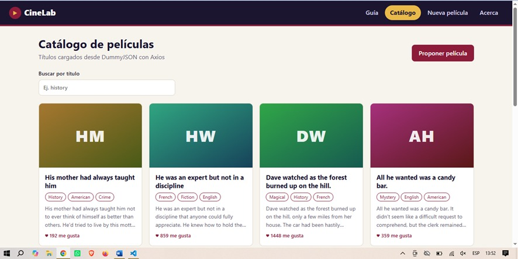
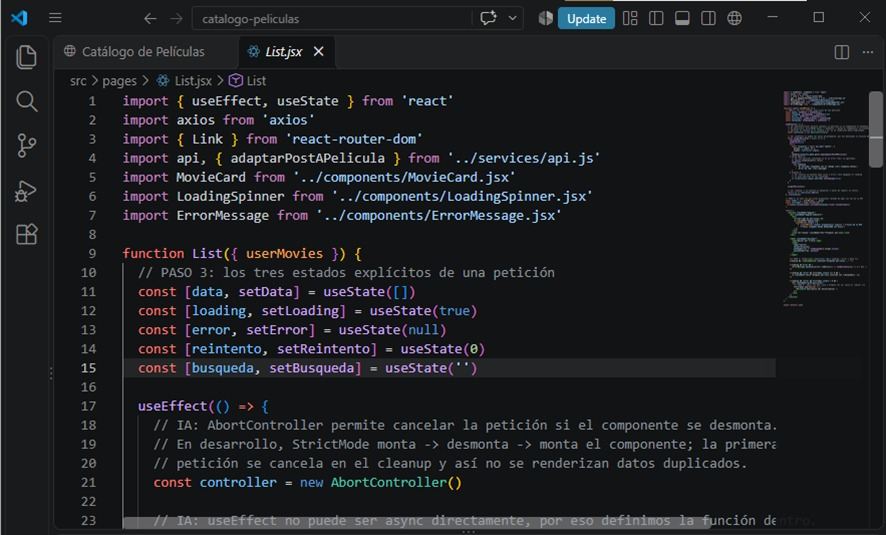
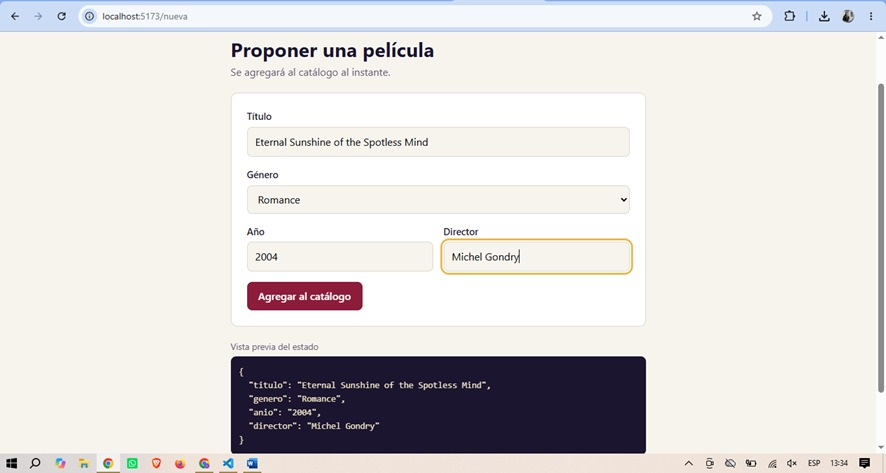

Bitácora de Aprendizaje ·
Temas tratados
Desarrollo de Single Page Applications (SPA) basadas en componentes en React, jerarquía y comunicación entre componentes (padres, hijos y hermanos), enrutamiento del lado del cliente sin recarga con React Router DOM, formularios controlados con estado local (useState) y consumo de APIs asíncronas con Axios (async/await).
¿Qué aprendí?
- Comunicación entre Componentes (Padres, Hijos y Hermanos): paso de datos descendente (Prop Drilling), elevación de estado (Lifting State Up mediante funciones callback de hijo a padre) y comunicación entre componentes hermanos a través de su componente padre común.
- Client-Side Routing: implementación de navegación fluida con <BrowserRouter>, <Routes>, <Route> y el uso de <NavLink> con clases activas dinámicas (isActive).
- Consumo de APIs con Axios y Async/Await: peticiones HTTP asíncronas mediante bloques try/catch/finally, manejo explícito de estados de UI (loading, data, error) y uso de AbortController para limpieza en useEffect y prevención de duplicidad.
- Renderizado Iterativo, Condicional y Formularios Controlados: renderizado dinámico de listas con .map() y key únicas, operadores condicionales (&&, ternario) y control de inputs en tiempo real con useState y eventos onChange/onSubmit.
Laboratorio / Práctica
- Práctica Individual (Guía Semana 06): desarrollo de una SPA modular con vistas enrutadas (Home, List con consumo de API, Form controlado y NotFound 404).
- Práctica de Comunicación y Maquetación: ejercicios de maquetación responsiva en 7 secciones, anidación en 4 niveles y flujos de datos bidireccionales entre componentes.
Herramientas y Validaciones
- Node.js LTS y Vite + React.
- React Router DOM v6 y Axios.
- JSONPlaceholder / DummyJSON como APIs de prueba.
- DevTools Network Tab y GitHub.
Evidencias


